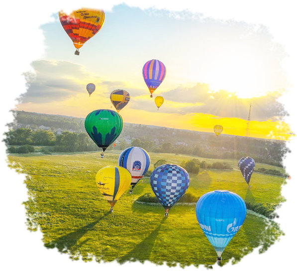
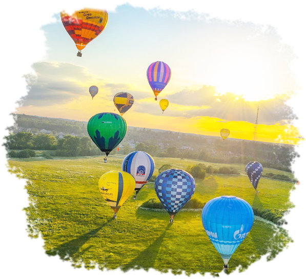

Неспешный полет над живописнейшими местами Подмосковья — необычное приключение, которое порадует ваших близких.
Почти каждый о них слышал и очень немногие их совершали. Но те счастливчики, которые всё же становятся воздухоплавателями, на всю жизнь запоминают свой первый полёт на воздушном шаре. Представьте, поток теплого воздуха неспешно отрывает корзину от земли и она плавно плывет по небу. Никто никуда не спешит, наслаждаясь красивыми видами и приятным полетом!
Полет продолжается чуть больше часа и проходит над живописнейшими Дмитровской и Истринской летными зонами. После приземления организуется торжественное принятие участников полета в клуб воздухоплавателей. Для празднования этого момента открывается бутылка шампанского Aeronavt.


 
